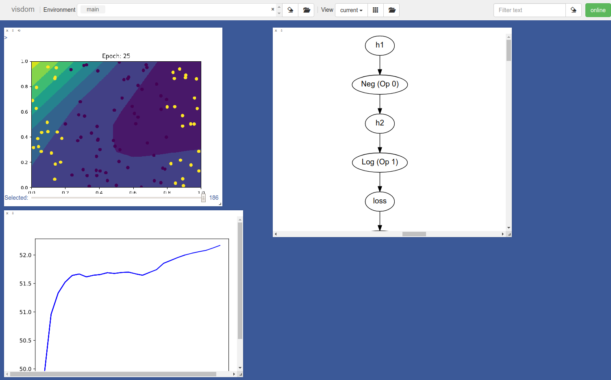

Assignment 0 - Getting Started¶
Welcome to the preliminary assignment for MiniTorch assignment. This assignment is focused on introducing the core technologies behind the library and to introduce the testing, dataset and visualization frameworks that we will use throughout the course. Additionally we will start building up some of the infrastructure for MiniTorch itself.
Before starting any of this assignment, Be sure to carefully read the setup.rst and contributing.rst.
Task 1: Operators¶
To start out, let's begin with a straightforward exercise to get used to the style checks and automatic testing. In this exercise, you will implement a series of basic mathematical functions in python. Each of these functions seem very simple, but it will turn out that they are basically everything we will use mathematically in the library.
Implement the following functions in minitorch/operators.py.
-
minitorch.operators.mul(x, y)¶ \(f(x, y) = x * y\)
-
minitorch.operators.id(x)¶ \(f(x) = x\)
-
minitorch.operators.neg(x)¶ \(f(x) = -x\)
-
minitorch.operators.add(x, y)¶ \(f(x, y) = x + y\)
-
minitorch.operators.lt(x, y)¶ \(f(x) =\) 1.0 if x is greater then y else 0
-
minitorch.operators.sigmoid(x)¶ \(f(x) = rac{1.0}{(1.0 + e^{-a})}\)
-
minitorch.operators.relu(x)¶ \(f(x) =\) x if x is greater then y else 0
See https://en.wikipedia.org/wiki/Rectifier_(neural_networks).
-
minitorch.operators.relu_back(x, y)¶ \(f(x) =\) y if x is greater then 0 else 0
Confirm that Tests 1 and 2 pass.
Task 2: Testing and Debugging¶
Before doing this task, be sure to carefully read property_testing.rst as well as the documentation for hypothesis.
For this task you will implement some property tests to check the operators from Task 1.
Modify test/test_operators.py to add three new property tests: test_symmetric, test_distribute, and test_other.
Task 3: Functional Python¶
Starting from the operators described in task1, we will build up more complex mathematical operations. To practice this process let's start by implemening some core functional ways of using the basic operations above.
If you are not familar with functional / higher-order python style, check out this tutorial https://www.hackerearth.com/practice/python/functional-programming/functional-programming-1/tutorial/.
Also check out the description of these three famous higher-order (function of functions) functions.
Map - https://en.wikipedia.org/wiki/Map_(higher-order_function)
ZipWith - https://en.wikipedia.org/wiki/Map_(higher-order_function)
Reduce - https://en.wikipedia.org/wiki/Fold_(higher-order_function)
Implement the following functions in minitorch/operators.py.
-
minitorch.operators.map(fn)¶ Higher-order map.
- Parameters
fn (one-arg function) -- process one value
- Returns
a function that takes a list and applies fn to each element.
- Return type
function
-
minitorch.operators.negList(ls)¶ Negate each element in ls
-
minitorch.operators.zipWith(fn)¶ Higher-order zipwith.
- Parameters
fn (two-arg function) -- combine two values
- Returns
takes two equally sized lists ls1 and ls2, produce a new list by
- Return type
function
applying fn(x, y) one each pair of elements.
-
minitorch.operators.addLists(ls1, ls2)¶ Add the elements of ls1 and ls2.
-
minitorch.operators.reduce(fn, start)¶ Higher-order reduce.
- Parameters
fn (two-arg function) -- combine two values
- Returns
function that takes a list ls of elements x_1, ... x_n and computes the reduction fn(x_3, fn(x_2, fn(x_1, start)))
- Return type
function
-
minitorch.operators.sum(ls)¶ Sum up a list.
- Parameters
ls (list) -- list
- Returns
sum of list
- Return type
float
-
minitorch.operators.prod(ls)¶ Product of a list.
- Parameters
ls (list) -- list
- Returns
product of list
- Return type
float
Finish and pass the task2 tests in testOperators.
Task 4: Modules¶
Modern deep learning systems can become quite large and complex. Commonly used models can include millions of learned parameters. While much of our class will focus on learning these parameters, this task will focus on simply managing them in a convenient way.
Modules are a common programming paradigm to group parameters together to make them easy to manage and access. This style of programming is often the main way that users of machine learning organize and manage code. (If you feel ready, you can read up more about how modules work in practice at https://pytorch.org/tutorials/beginner/blitz/cifar10_tutorial.html#sphx-glr-beginner-blitz-cifar10-tutorial-py ).
This task will just implement the core structure of the Module class. In particular we will implement a tree-data structure that stores named Parameters on each node. None of this really has much to do with machine learning, it is just a datastructures problem to create the tree and then walk it to find all of the parameters of interest. Be sure to read the tests in tests/test_module.py to get a better sense of how this works.
Implement the necessary functions in the module class and make sure
the corresponding tests pass.
-
class
minitorch.Module¶ Modules are a recursive tree-shaped data-structure. Each module can store three things: 1) parameters, 2) non-parameter data, 3) other modules. Internally the user stores each of these directly on self, but the module spies under the hood to determine the type of each assignment.
Here is an example of the simplest usage of a module:
class MyModule(Module): def __init__(self, arg): # Initialize the super-class (so it can spy.) super().__init__() # A parameter member (subclass of Parameter) self.parameter1 = Parameter(15) # Another member self.data = 25 # A module member (subclass of Module) self.sub_module = OtherModule(arg, arg+10)
Internally, parameters (type 1) are stored in self._parameters, data (type 2) is stored in on self, modules (type 3) are stored in self._modules.
Note
All subclasses should begin their initialization by calling
super().__init__()
This allows Module to capture any members of type Module or Parameter and store them in a special dictionary.
-
_modules¶ Storage of the child modules.
- Type
dict
-
_parameters¶ Storage of the module's parameters.
- Type
dict
-
mode¶ Mode of operation, can be "train" / "eval".
- Type
string
-
Task 5: Visualization¶
While testing is nice when you are getting close to the answer, sometimes the best thing to do is to just look at your data and outputs. Visualizing our system can't prove that it is correct, but it can often times lead us directly to figure out what is wrong.
Throughout our development we will be using visualization to observe intermediate states, training progress, outputs, and even final models.
Technically the main library we will use it called Visdom (https://github.com/facebookresearch/visdom). Here's an example of what it looks like
You can think of it as a pasteboard for sending images and graphs from you code to a centralized, organized place. Nothing that magical, we could just output them to a directory, but we will see this as some nice benefits.
To start Visdom, you need to run the following from a command-line in your virtual env:
>>> visdom
Next, open up a browser window and go to http://localhost:8097 (or whichever port it started on).
Finally:
import visdom
import matplotlib.pyplot as plt
vis = visdom.Visdom()
# Loss goes does!
plt.plot([2.0, 1.0, 0.0], c="blue")
plt.title("Model Loss")
# Send to visdom
vis.matplot(plt, win="loss")
For the first few assignments we will be using a set of datasets
that are implemented in project/datasets.py. Read through the code in project/run_torch.py to see an implementation of a model for this code in torch. Make sure you are able to run this code and observe the progress of the model with the Visdom setup.
Save the loss graph of this model and the final image it generates and commit them to your repo. Add the images to your README.